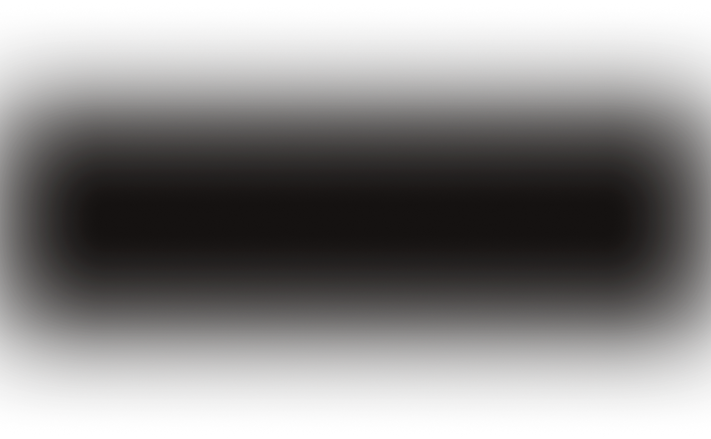

Российский блогер
Обо мне
аудитория

более 250 000 человек

Я родился и вырос в Саратове, поступил на бюджет в ИТМО, один из лучших IT вузов России.
С 2021 года принимаю активные действия в решении общественных проблем
жителей города Санкт-Петербург

Фонд будущие лидеры
В 2018 году я стал победителем отбора и участником фонда «Будущие лидеры»
Мастерская Новых медиа
В 2022 году прошёл отбор в «Мастерскую Новых Медиа» от платформы «Россия - страна возможностей», созданной по инициативе Президента России. В настоящий момент прохожу там обучение
ищи меня здесь
Если ты хочешь преуспеть в каком-то деле, найди наставника, который уже в этом деле достиг внушительного результата. Если у тебя горит огонь в глазах и ты готов(а) работать на все 150%, то я готов им стать для тебя
Кирилл